He loved macrobiotic and vegetarian cooking. He was no carnivore, for him eating was above all a way of caring, for himself and for others.
He paid close attention to what he ate, collected recipes, and followed paths of wellbeing and mindful nutrition.
He enrolled in a macrobiotic cooking course and, a few years later, in one to learn how to make seitan, where they had him put on a chef's jacket.
Cooking, for him, was not a chore but a pleasure, and a way of being together.
"Magical, that Christmas, all those vegetables with chickpea sauce, and the little chocolate cakes."Roberto
It was their Christmas dinner in New York, bought at Whole Foods and shared together.
His favourite restaurant was Joia, in Milan: vegetarian haute cuisine, where a dish can become a small painting.
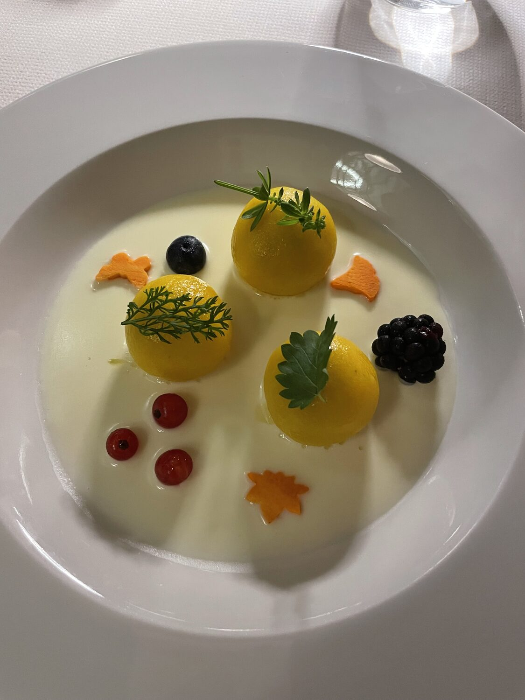
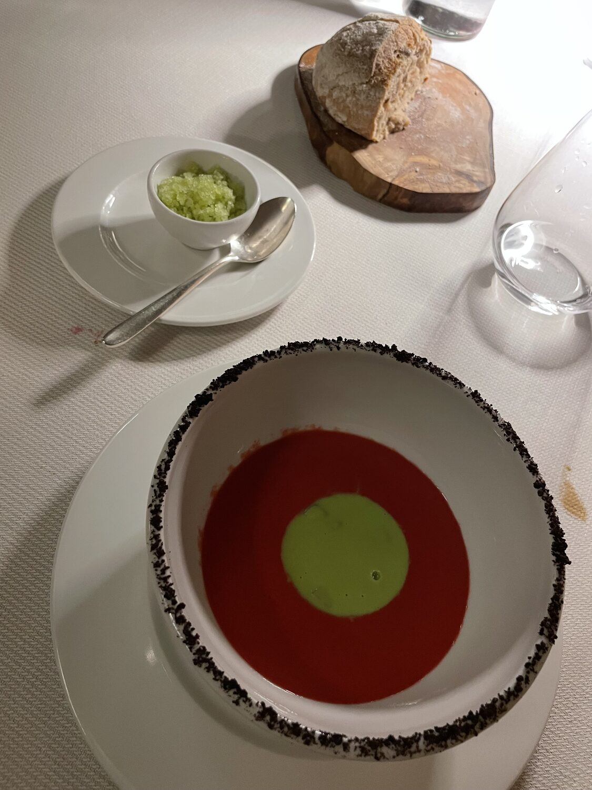
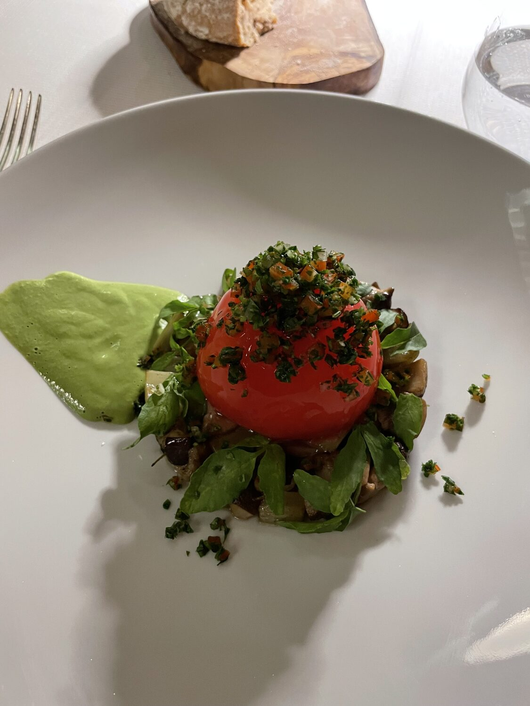
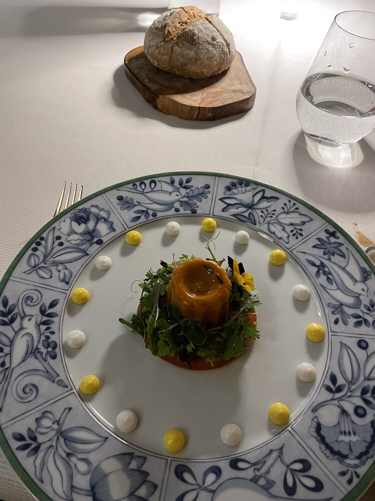
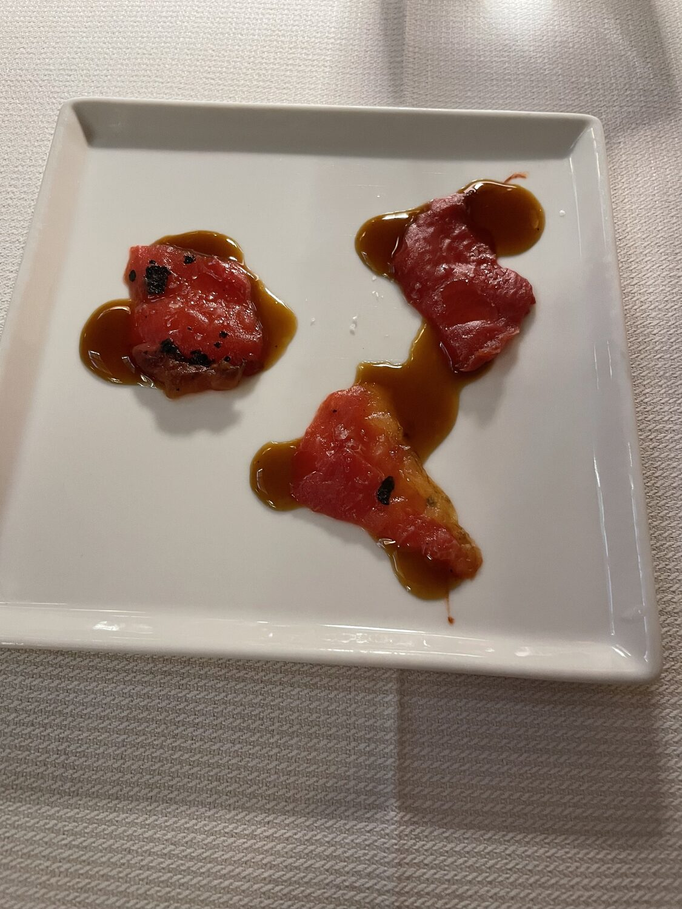
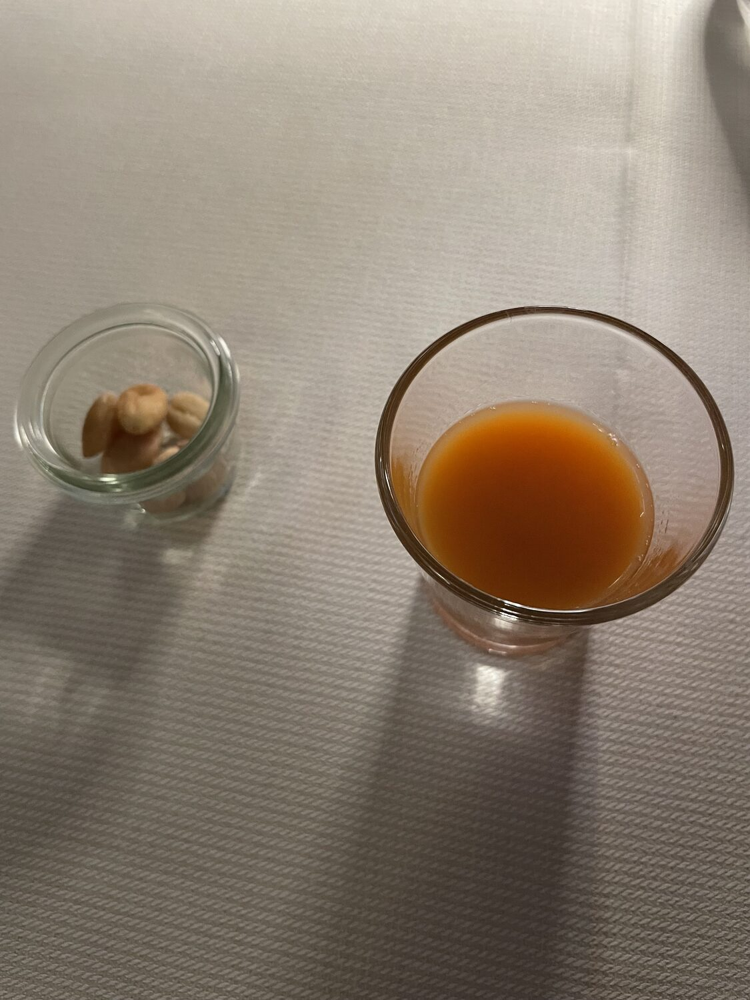
As a good Genoese, though, he never turned down seafood. By the sea, fritto misto and pasta allo scoglio were among the few things he never gave up.
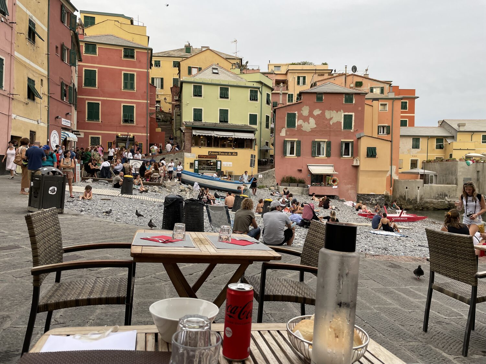
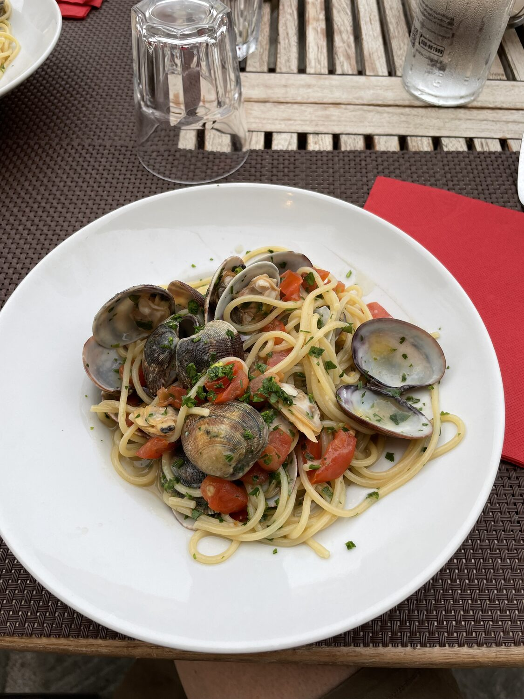
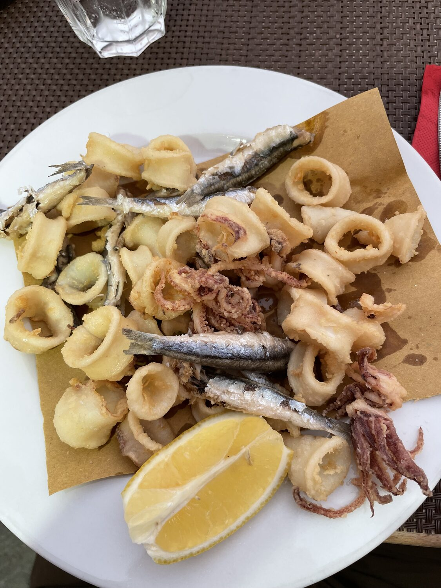
And he had a great weakness for pastry sweets, or even just a maritozzo bought at the café.
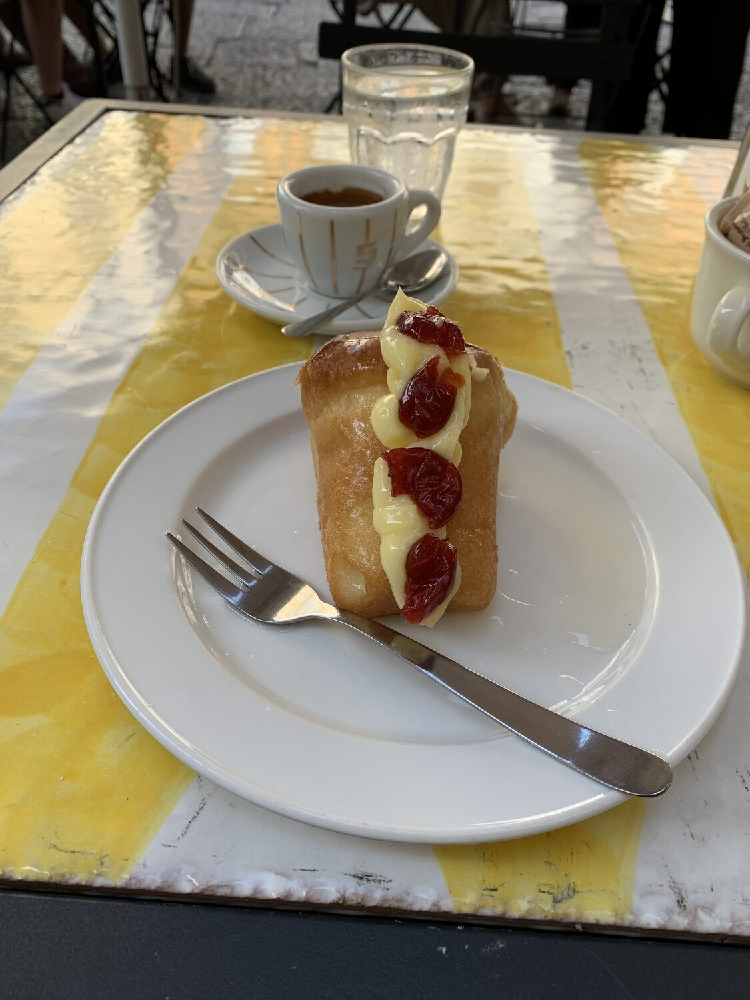
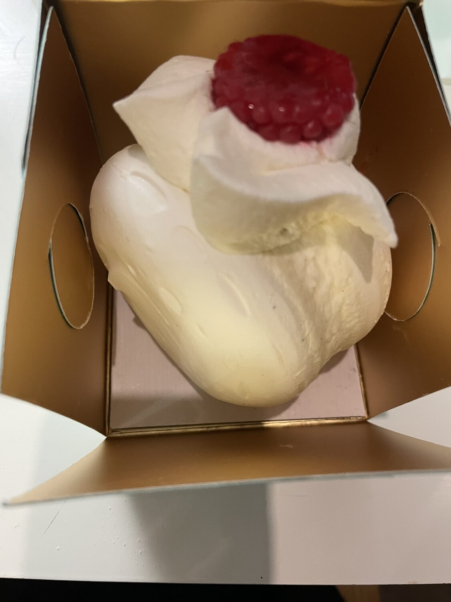